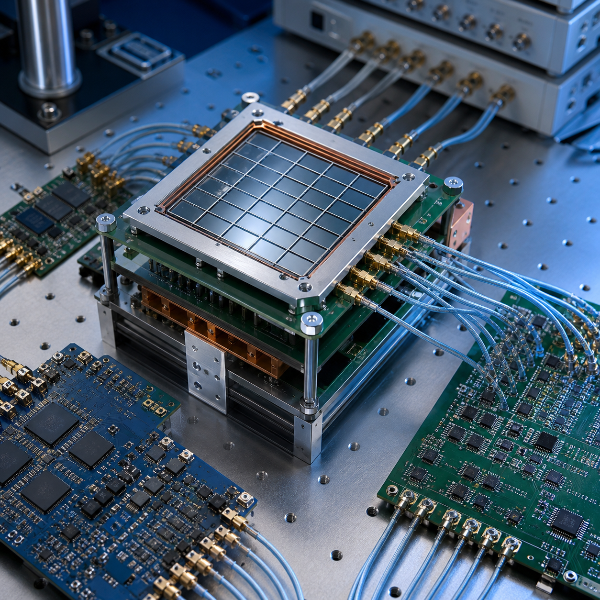
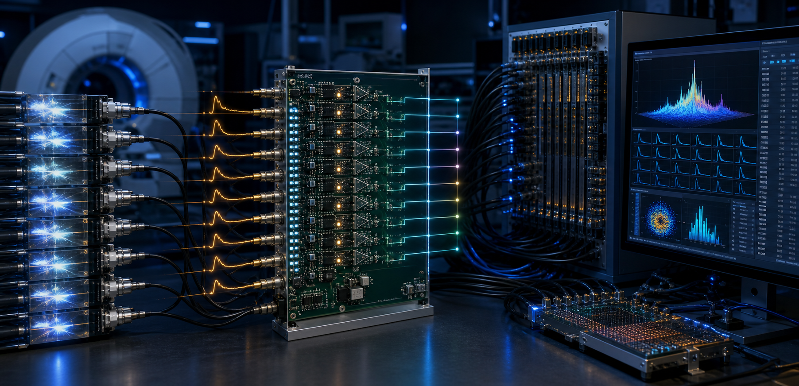
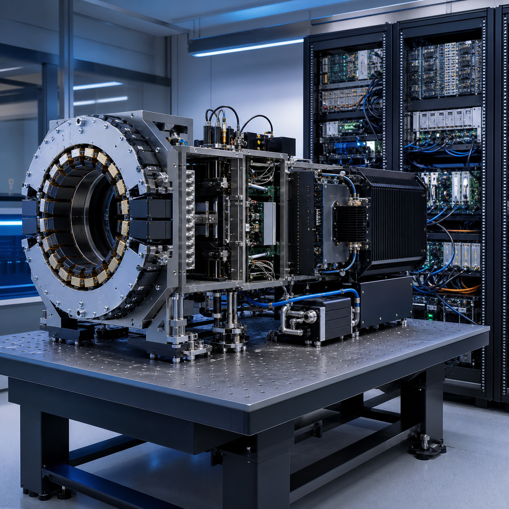
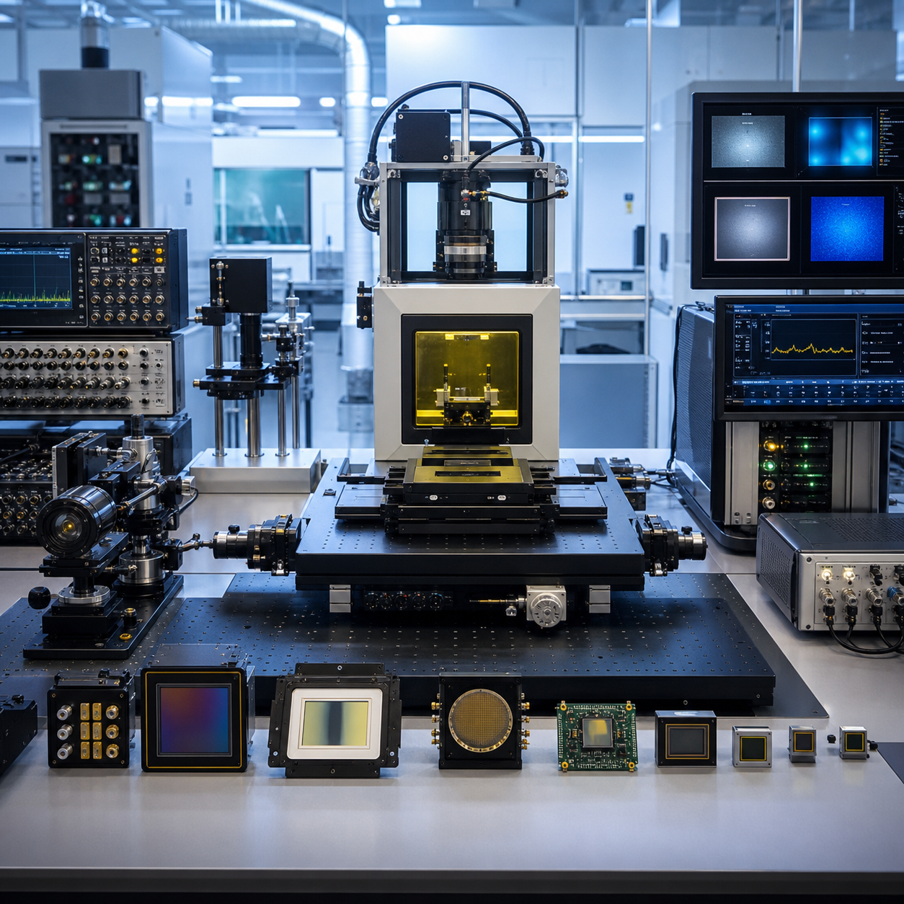

多电压阈值技术
Beyond Shannon, Beyond PET
模数转换器将模拟信号转换为数字信号，是连接物理世界与信息世界的桥梁，也是现代工业与科研中的核心基础器件。1920年代以来，随着均匀时域采样的电子学实现和数学理论建立，均匀时域采样成为了模数转换领域的基石。但对于需要高速多通道信号采样的应用场景（如正电子发射断层成像、核聚变中子能谱和中微子探测等），基于均匀时域采样的模数转换方案存在功耗和成本两方面的不可行。团队发明的多电压阈值数字化方法（MVT），基于值域采样，结合信号先验信息，以若干阈值比较器即可简洁地完成海量通道高速信号的精确数字化。目前，MVT方法已被成功运用在正电子发射断层成像、X射线安检、中子石油测井和质子治疗监测等领域中。
实验室拥有完备的基于多电压阈值技术的全数字探测核心技术体系、一体化系统设计研发能力与国际先进实验平台。下文将展示本实验室核心技术支撑高速、高精度粒子成像研究工作，推动核医学、高能物理与天体粒子探测系统领域前沿发展。
核心技术体系
本实验室核心技术研究聚焦创新型多电压阈值芯片架构与弱光探测机理研发，旨在突破传统基于均匀时域采样的模数转换方案的性能瓶颈。研究覆盖多个关键方向：可重构多阈值读出电路、高速堆积信号甄别、超低噪声单光子探测、抗辐照集成硅光电倍增器件，以及定量 PET 成像校准技术。

系统研发能力
实验室工程团队将多电压阈值芯片内核、闪烁晶体材料、传感器阵列与图像重建算法一体化集成，实现探测系统整机性能全局最优。研究工作覆盖全流程：从研发初期的架构权衡分析、定制化芯片设计，到全链路粒子探测平台的系统集成、性能标定与样机验证。典型应用场景涵盖高亮度对撞机粒子鉴别、全身及术中 PET 分子成像、地下稀有物理事件探测、天体粒子观测载荷。

科研综合平台
实验室科研团队依托国际一流研发平台，完成多电压阈值探测系统样机的搭建与性能验证。软件开发团队配套硬件体系，搭建定制化高速信号处理流水线、全数据校正算法，以及依托高性能算力资源构建的端到端成像重建框架。 整套集成样机均在超高计数率、强辐射极端工况下完成可靠性验证，可为前沿基础物理研究与精准临床核医学应用输出精准、稳定、可定量的探测数据。
重点科研项目


最新新闻


7月20日
科学网
7月19日，世界知识产权中小企业全球奖在瑞士日内瓦世界知识产权组织总部举行颁奖典礼，全数字PET产业转化团队瑞派宁公司获此殊荣，成为全球仅有的5个获奖者之一...
技术创新引领科学发现
进一步探索
重点论文
A novel iterative iso-transmission line empirical material decomposition algorithm for multi-energy photon-counting CT
Jan 01
Biomedical Signal Processing and Control,
99, 2025, 106853. doi:10.1016/j.bspc.2024.106853.
Performance Evaluation of New PET/CT DigitMI 930
Jan 09
IEEE Transactions on Radiation and Plasma
Medical Sciences, vol. 9, no. 5, pp. 578-585, May 2025, doi:
10.1109/TRPMS.2025.3526659.
Investigation of a Dual-Panel In-Beam PET Based on Digital Detectors for Proton Therapy Monitoring With Different Monitoring Strategies: A Simulation Study
Jan 30
IEEE Transactions on Radiation and Plasma
Medical Sciences, vol. 10, no. 4, pp. 582-592, April 2026, doi:
10.1109/TRPMS.2025.3584122.